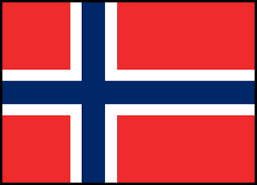
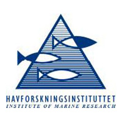

 Institute of Marine Research (IMR)
The Institute of Marine Research is the leading fisheries research institute in Norway. It is responsible for data collection and developing stock assessment models to support quota advice in Norway.
The Institute is also responsible for providing scientific advice to government agencies, industry, and other civic institutions in Norway and plays a leading role within the International Council for the Exploration of the Seas (ICES).